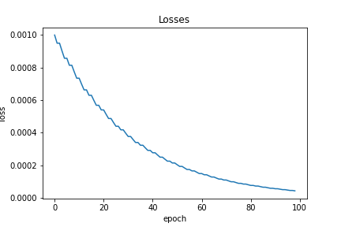
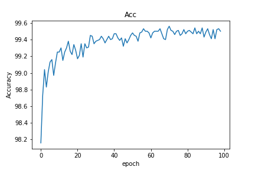
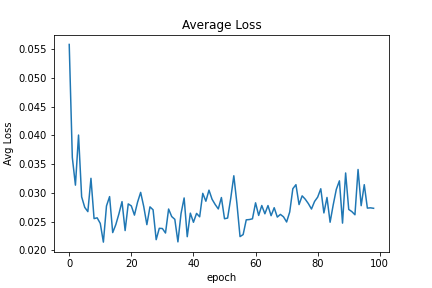
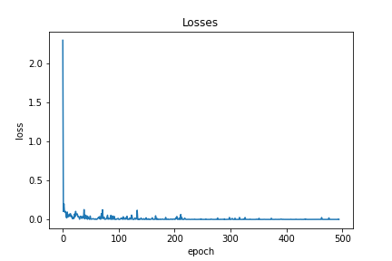

On 16 th October, 2020, I thought of using Pytorch to create a near SOTA
classifier for the simplest Computer Vision dataset – MNIST, introduced
by Yaan LeCun. Current state of the art is about
99.84% using
Capsule networks.
I wanted to test out different interesting architectural style
for creating internal ensembles of the model, and for that experiment, I used Pytorch!
Firstly, let's install the uncommon dependencies, given, you have installed the common ones!
! pip install hiddenlayer graphviz torchviz
So, let's dive into the code.
Firstly, the basic imports,
import numpy as np
import torch
import torch.nn as nn
import torch.optim as optim
import torch.utils.data as Data
from torchvision import datasets, transforms
import torch.nn.functional as F
import timeit
import unittest
We need to add seeds for reproducibility of results in other machines
torch.manual_seed(0)
torch.backends.cudnn.deterministic = True
torch.backends.cudnn.benchmark = False
np.random.seed(0)
For running in GPUs, we need to use ‘cuda’, which can be achieved with the following piece of code
device = torch.device('cuda' if torch.cuda.is_available() else 'cpu')
Computer vision datasets can be trained and tested with high accuracy via image
augmentations, we have used Cropping, resizing, colour jittering, rotation and
random affine transform to make extensive data augmentation. We have also used
the mean and standard deviation to normalize the images during training, which
will make the deep learning model easier to train.
# define a transforms for preparing the dataset
transform = transforms.Compose([
transforms.CenterCrop(26),
transforms.Resize((28,28)),
transforms.ColorJitter(brightness=0.05, contrast=0.05, saturation=0.05, hue=0.05),
transforms.RandomRotation(10),
transforms.RandomAffine(5),
# convert the image to a pytorch tensor
transforms.ToTensor(),
# normalise the images with mean and std of the dataset
transforms.Normalize((0.1307,), (0.3081,))
])
After setting the basic stuffs, we will load the dataset into train and test part,
which are imported and downloaded from the datasets module.
# Load the MNIST training, test datasets using `torchvision.datasets.MNIST`
# using the transform defined above
train_dataset = datasets.MNIST('./data',train=True,transform=transform,download=True)
test_dataset = datasets.MNIST('./data',train=False,transform=transform,download=True)
This is a relatively small dataset with 60K images, but for large datasets we need to
use batch-size, which will store the images in primary memory from the secondary memory
before sending it to GPUs. This will create a certain amount of bottleneck in computation,
but this is the standard thing to do, when we are dealing with massive amounts of data.
# create dataloaders for training and test datasets
# use a batch size of 32 and set shuffle=True for the training set
train_dataloader = Data.DataLoader(dataset=train_dataset, batch_size=128, shuffle=True)
test_dataloader = Data.DataLoader(dataset=test_dataset, batch_size=128, shuffle=True)
Now it’s time to build our Deep Neural Network Model! The architecture is some-what shown below.
The Pytorch code can be written as:
# My Net
class Net(nn.Module):
def __init__(self):
super(Net, self).__init__()
# define a conv layer with output channels as 16, kernel size of 3 and stride of 1
self.conv11 = nn.Conv2d(1, 16, 3, 1) # Input = 1x28x28 Output = 16x26x26
self.conv12 = nn.Conv2d(1, 16, 5, 1) # Input = 1x28x28 Output = 16x24x24
self.conv13 = nn.Conv2d(1, 16, 7, 1) # Input = 1x28x28 Output = 16x22x22
self.conv14 = nn.Conv2d(1, 16, 9, 1) # Input = 1x28x28 Output = 16x20x20
# define a conv layer with output channels as 32, kernel size of 3 and stride of 1
self.conv21 = nn.Conv2d(16, 32, 3, 1) # Input = 16x26x26 Output = 32x24x24
self.conv22 = nn.Conv2d(16, 32, 5, 1) # Input = 16x24x24 Output = 32x20x20
self.conv23 = nn.Conv2d(16, 32, 7, 1) # Input = 16x22x22 Output = 32x16x16
self.conv24 = nn.Conv2d(16, 32, 9, 1) # Input = 16x20x20 Output = 32x12x12
# define a conv layer with output channels as 64, kernel size of 3 and stride of 1
self.conv31 = nn.Conv2d(32, 64, 3, 1) # Input = 32x24x24 Output = 64x22x22
self.conv32 = nn.Conv2d(32, 64, 5, 1) # Input = 32x20x20 Output = 64x16x16
self.conv33 = nn.Conv2d(32, 64, 7, 1) # Input = 32x16x16 Output = 64x10x10
self.conv34 = nn.Conv2d(32, 64, 9, 1) # Input = 32x12x12 Output = 64x4x4
# define a max pooling layer with kernel size 2
self.maxpool = nn.MaxPool2d(2) # Output = 64x11x11
#self.maxpool1 = nn.MaxPool2d(1)
# define dropout layer with a probability of 0.25
self.dropout1 = nn.Dropout(0.25)
# define dropout layer with a probability of 0.5
self.dropout2 = nn.Dropout(0.5)
# define a linear(dense) layer with 128 output features
self.fc11 = nn.Linear(64*11*11, 256)
self.fc12 = nn.Linear(64*8*8, 256) # after maxpooling 2x2
self.fc13 = nn.Linear(64*5*5, 256)
self.fc14 = nn.Linear(64*2*2, 256)
# define a linear(dense) layer with output features corresponding to the number of classes in the dataset
self.fc21 = nn.Linear(256, 128)
self.fc22 = nn.Linear(256, 128)
self.fc23 = nn.Linear(256, 128)
self.fc24 = nn.Linear(256, 128)
self.fc33 = nn.Linear(128*4,10)
#self.fc33 = nn.Linear(64*3,10)
def forward(self, inp):
# Use the layers defined above in a sequential way (folow the same as the layer definitions above) and
# write the forward pass, after each of conv1, conv2, conv3 and fc1 use a relu activation.
x = F.relu(self.conv11(inp))
x = F.relu(self.conv21(x))
x = F.relu(self.maxpool(self.conv31(x)))
#print(x.shape)
#x = torch.flatten(x, 1)
x = x.view(-1,64*11*11)
x = self.dropout1(x)
x = F.relu(self.fc11(x))
x = self.dropout2(x)
x = self.fc21(x)
y = F.relu(self.conv12(inp))
y = F.relu(self.conv22(y))
y = F.relu(self.maxpool(self.conv32(y)))
#x = torch.flatten(x, 1)
y = y.view(-1,64*8*8)
y = self.dropout1(y)
y = F.relu(self.fc12(y))
y = self.dropout2(y)
y = self.fc22(y)
z = F.relu(self.conv13(inp))
z = F.relu(self.conv23(z))
z = F.relu(self.maxpool(self.conv33(z)))
#x = torch.flatten(x, 1)
z = z.view(-1,64*5*5)
z = self.dropout1(z)
z = F.relu(self.fc13(z))
z = self.dropout2(z)
z = self.fc23(z)
ze = F.relu(self.conv14(inp))
ze = F.relu(self.conv24(ze))
ze = F.relu(self.maxpool(self.conv34(ze)))
#x = torch.flatten(x, 1)
ze = ze.view(-1,64*2*2)
ze = self.dropout1(ze)
ze = F.relu(self.fc14(ze))
ze = self.dropout2(ze)
ze = self.fc24(ze)
out_f = torch.cat((x, y, z, ze), dim=1)
#out_f1 = torch.cat((out_f, ze), dim=1)
out = self.fc33(out_f)
output = F.log_softmax(out, dim=1)
return output
We can now use the model to set it to GPU.
We can even check the parameters:
Which will result in:
<bound method Module.parameters of Net(
(conv11): Conv2d(1, 16, kernel_size=(3, 3), stride=(1, 1))
(conv12): Conv2d(1, 16, kernel_size=(5, 5), stride=(1, 1))
(conv13): Conv2d(1, 16, kernel_size=(7, 7), stride=(1, 1))
(conv14): Conv2d(1, 16, kernel_size=(9, 9), stride=(1, 1))
(conv21): Conv2d(16, 32, kernel_size=(3, 3), stride=(1, 1))
(conv22): Conv2d(16, 32, kernel_size=(5, 5), stride=(1, 1))
(conv23): Conv2d(16, 32, kernel_size=(7, 7), stride=(1, 1))
(conv24): Conv2d(16, 32, kernel_size=(9, 9), stride=(1, 1))
(conv31): Conv2d(32, 64, kernel_size=(3, 3), stride=(1, 1))
(conv32): Conv2d(32, 64, kernel_size=(5, 5), stride=(1, 1))
(conv33): Conv2d(32, 64, kernel_size=(7, 7), stride=(1, 1))
(conv34): Conv2d(32, 64, kernel_size=(9, 9), stride=(1, 1))
(maxpool): MaxPool2d(kernel_size=2, stride=2, padding=0, dilation=1, ceil_mode=False)
(dropout1): Dropout(p=0.25, inplace=False)
(dropout2): Dropout(p=0.5, inplace=False)
(fc11): Linear(in_features=7744, out_features=256, bias=True)
(fc12): Linear(in_features=4096, out_features=256, bias=True)
(fc13): Linear(in_features=1600, out_features=256, bias=True)
(fc14): Linear(in_features=256, out_features=256, bias=True)
(fc21): Linear(in_features=256, out_features=128, bias=True)
(fc22): Linear(in_features=256, out_features=128, bias=True)
(fc23): Linear(in_features=256, out_features=128, bias=True)
(fc24): Linear(in_features=256, out_features=128, bias=True)
(fc33): Linear(in_features=512, out_features=10, bias=True)
)>
It is good to have unit test modules in case of bigger code bases.
import unittest
class TestImplementations(unittest.TestCase):
# Dataloading tests
def test_dataset(self):
self.dataset_classes = ['0 - zero',
'1 - one',
'2 - two',
'3 - three',
'4 - four',
'5 - five',
'6 - six',
'7 - seven',
'8 - eight',
'9 - nine']
self.assertTrue(train_dataset.classes == self.dataset_classes)
self.assertTrue(train_dataset.train == True)
def test_dataloader(self):
self.assertTrue(train_dataloader.batch_size == 32)
self.assertTrue(test_dataloader.batch_size == 32)
def test_total_parameters(self):
model = Net().to(device)
#self.assertTrue(sum(p.numel() for p in model.parameters()) == 1015946)
suite = unittest.TestLoader().loadTestsFromModule(TestImplementations())
unittest.TextTestRunner().run(suite)
In the training function, we will pass the data by iterating over the data loaders to model in GPU.
We will use the optimizer to calculate the loss, and we will record the losses for plotting in a graph.
losses_1 = []
losses_2 = []
def train(model, device, train_loader, optimizer, epoch):
model.train()
for batch_idx, (data, target) in enumerate(train_loader):
# send the image, target to the device
data, target = data.to(device), target.to(device)
# flush out the gradients stored in optimizer
optimizer.zero_grad()
# pass the image to the model and assign the output to variable named output
output = model(data)
# calculate the loss (use nll_loss in pytorch)
loss = F.nll_loss(output, target)
# do a backward pass
loss.backward()
# update the weights
optimizer.step()
if batch_idx % 100 == 0:
print('Train Epoch: {} [{}/{} ({:.0f}%)]\tLoss: {:.6f}'.format(
epoch, batch_idx * len(data), len(train_loader.dataset),
100. * batch_idx / len(train_loader), loss.item()))
losses_1.append(loss.item())
losses_2.append(100. * batch_idx / len(train_loader))
Similarly, for test dataset,
accuracy = []
avg_loss = []
def test(model, device, test_loader):
model.eval()
test_loss = 0
correct = 0
with torch.no_grad():
for data, target in test_loader:
# send the image, target to the device
data, target = data.to(device), target.to(device)
# pass the image to the model and assign the output to variable named output
output = model(data)
test_loss += F.nll_loss(output, target, reduction='sum').item() # sum up batch loss
pred = output.argmax(dim=1, keepdim=True) # get the index of the max log-probability
correct += pred.eq(target.view_as(pred)).sum().item()
test_loss /= len(test_loader.dataset)
print('\nTest set: Average loss: {:.4f}, Accuracy: {}/{} ({:.0f}%)\n'.format(
test_loss, correct, len(test_loader.dataset),
100. * correct / len(test_loader.dataset)))
avg_loss.append(test_loss)
accuracy.append(100. * correct / len(test_loader.dataset))
We can also adjust the learning rate, before firing up for training!
model = Net().to(device)
learning_rate = []
def adjust_learning_rate(optimizer, iter, each):
# sets the learning rate to the initial LR decayed by 0.1 every 'each' iterations
lr = 0.001 * (0.95 ** (iter // each))
state_dict = optimizer.state_dict()
for param_group in state_dict['param_groups']:
param_group['lr'] = lr
optimizer.load_state_dict(state_dict)
print("Learning rate = ",lr)
return lr
## Define Adam Optimiser with a learning rate of 0.01
optimizer = torch.optim.Adam(model.parameters(),lr=0.001)
start = timeit.default_timer()
for epoch in range(1,100):
lr = adjust_learning_rate(optimizer, epoch, 1.616)
learning_rate.append(lr)
train(model, device, train_dataloader, optimizer, epoch)
test(model, device, test_dataloader)
stop = timeit.default_timer()
print('Total time taken: {} seconds'.format(int(stop - start)))
After training for 100 epochs, we get a test accuracy of,
99.57%, which is great,
without doing any fancy stuffs!
Learning rate = 4.3766309037604346e-05
Train Epoch: 99 [0/60000 (0%)] Loss: 0.000113
Train Epoch: 99 [12800/60000 (21%)] Loss: 0.000007
Train Epoch: 99 [25600/60000 (43%)] Loss: 0.000006
Train Epoch: 99 [38400/60000 (64%)] Loss: 0.000010
Train Epoch: 99 [51200/60000 (85%)] Loss: 0.000027
Test set: Average loss: 0.0211, Accuracy: 9957/10000 (100%)
Total time taken: 7074 seconds
The images for variation of Learning rate can be shown below:
(P.S. look for the typo)

Similarly, the average accuracy, average loss, and loss are shown below:



The model can be downloaded from
here.
You can use the model by loading it in Pytorch!
It takes lot of innovative methods, to surpass the current state of the art accuracy.
If anyone can beat that, it will result in a new paper in a reputed journal. It looks
like the model has got into its limit and the test accuracy is fluctuating between
99.57 %
and 99.53%. Here is the basic framework for the work, now you are all set up to explore a
new domain of competition, via novel methods!
Find the notebook [
here]
Still then, Happy Coding!